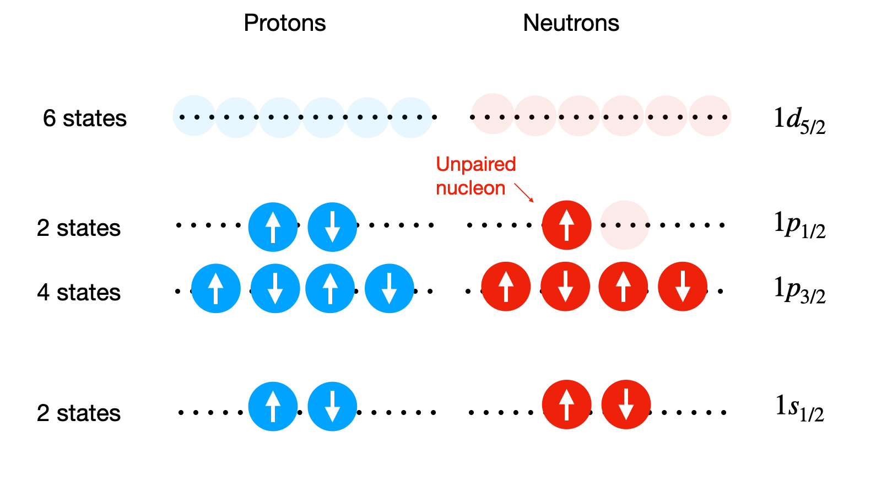

Unit 4 : Nuclear Properties#
Now we have our shell model that describes our oberved magic numbers, we can start making predictions for other nuclear properties such as the Nuclear Spin, \(I\). This quantity comes from the principle of summing up all the individual Total Angular Momentum numbers \(j\) of all the nucleon, doing this seperatetly for neutrons and protons.
However we can simplifiy things hugely because the \(j\) values are half-integer and in any filled shell all the nucleons there will pair up as positive negative pairs and so contribute nothing to the overall total. So we really only neeed to worry about the nucleons in the outer shell. If this shell is full then again the total contribution will be zero, and we have \(I=0\). In fact in general if we have even N and even Z then \(I=0\) as all nucleons will form spin up-down combinations.
The more interesting case is when we have one un-paired nucleon in the outer shell. Consider the case of a nucleus with the proton energy levels filled up exactly, but where tthe neutrons in the outer Shell have just one neutron. The nuclear spin takes on the \(j\) value assigned to that nucleon.
That is, if we fill up the levels with nucleons but have a left over nucleon, alone in an unfilled shell, the level spin assignment appropriate to that nucleon will be the same as the Nuclear Spin itself.
Similarly, consider a case where all the levels are filled perfectly for one class of nucleons (say the protons) but for the othere (say neutrons) we are just one nucleon short of filling the last level (like having a nucleon “hole” in that shell). In this case the Nuclear Spin just takes on the level spin assignment appropriate to that missing nucleon.
Nuclear Spin Example#
Here is an example for \(^{15}_{8}\textnormal{O}\).

From the level diagram above we predict that the nuclear spin of O-15 is \(I=1/2\) due to the unpaired neutron in the outer \(1\textnormal{p}_{1/2}\) level have a \(j=1/2\). This is indeed what is measured in reality.
Things get harder if instead we only have a partially filled outer shell but an odd number of nucleons. We can assign \(I=j\) of the unpaired nucleon again, but this does not work for all nuclei and in some cases we would need to try to sum up the entire shell structure to get a valid result.
The main points here are that:
even-even nuclei have spin zero due to always having the spins of individual nucleons pairing up and cancelling out.
Odd-even nuclei typically have half integer spins which can range 3/2, 5/2, 1/2. In simple cases the spin of the missing nucleon can give \(I\).
Odd-odd nuclei can achieve spin states much higher such a 1 or 3 but are more complex and typically require a full evaluation of the expectation values of the possible spin states.
Nuclear Parity#
The next thing we can do with our shell model is predict the parity of the nucleus. Parity is a transformation whereby the sign of the coordinate system is changed, as below. The parity transformation changes a Right handed Coordinate system into a Left Handed Coordinate or vice-versa.

As shown the wave function of a nucleon in the stationary state can have either odd or even Parity depending on what happens under the transformation. It’s conveenient to think of a Parity Operator \(P\) with effect \(P\Psi(r) = \Psi(-r)\). If \(\Psi\) has a unique parity, then \(P\psi(r) = \pm \Psi(r)\), and parity \(\pm1\) are the eigenvalues of \(P\). Parity is often called \(\pi\), so \(\pi=\pm 1\).
It is simple to find the Parity of a Nucleon, its just \(\pi=(-1)^{l}\) where \(l\) is the Orbital Angular Momenttum again remember from our notation the letter corresponds to the value of \(l\) (0-s, 1-p, 2-d, 3-f). Parity is a multiplicattive quantity. The parity assignment of a nucleus therefore comes from the product of the parity of all the nucleons
When considering parity alongside the Nuclear Spin the nomenclature is to write it as : \(I^{\pi}\). For example the state \(0^{+}\) has zero nuclear spin and even parity.
When trying to estimate parity we can simplify things in the same way as we did for nuclear spin. If the nucleons all pair up then we end up with even parity. If we are left with an Unpaired Nucleon then the parity comes from the \(l\) value appropriate to the level in which that nucleon sits. So for instnace, returning to our example of O-15 above, the unpaired nucleon sits in the p-level, \(l=1\), so the parity of the nucleis us \((-1)^{l}=-1\). This means it has odd parity and we would write both its spin and parity state as: \(I^{\pi}=\frac{1}{2}^{-}\).
Shell Challenges#
So the shell model gives us a pretty good description of nuclei based on QM principles. It gives us a good basis for understanding the Magic Numbers, Nuclear Spin, and Parity of Nuclei. However, it’s worth noting a few remaining issues that can cause problems. This leads to several corrections usually being applied to the potential to better fit observed data.
Most importantly there are two correctinos for protons:
It turns out that the shell ordering changes a bit as \(A\) increases due to residual interactinos between nucleons but this is not big enough to affect the Magic Numbers.
The effective potential well shape, and hence the energy levels, are actually slightly different for the protons and the neutrons as we should account for the additional proton-proton Coulomb interaction. Neverthelesss, the top energy levels containing neutrons will be at nearly the same energy as the top energy levels containing protons for the purposes of most calculations.
The effective potential well shape should also be modified for protons to account for their influence of atomic electrons.
This Electrostatic Repulsion Energy between protons implies a decrease in the depth of the potential for protons, due to their interactiton with all the other protons, as here:

If all these final tweaks are taken into account the shell model is a powerful complement to the LDM and SEMF models based on the idea that the total angular momentum of each single nucleon is the vector sum of its spin and obrital angular momentum.
Shell Model Summary#
Taking the Shell Model nucleons toogether leads to nuclear levels. Any level (specified by n, l, j) which is fully occupied (i.e. has 2j+1 occupants) contributes nothing to the total spin as the total angular moomenta \(j\) of the occupants sums to zero. (j+1) is an even number for all single particle levels i.e. in a model ehrtr dinhlr pstyivlr orbits in pottential of all others. Thus in nuclei where protons and neutrons sperately fully occupy shells (even-even), nuclear spin should be zero, it is.
Also if two neutrons (or protons) occupy a level with the same \(j\) and \(l\), then the total angular momenta couple to give zero contribution.
Now if we add one nucleon to a final filled shell this should leeave the nucleus with the total angular momentum \(j\) \((=l)\) of that nucleon alone. The preediction of ground spin sttate and parity is a great success of the shell model. It predicts that all even-even nuclei will have zero anguar momentum and an odd A nucleus will have the angular momentum of the odd nucleon.
Here is a table showing a few of the successful predictions.

This is all good but thare are also failings, notably:
In the next section we will go further to look at “Collective Models” that can go some wway to solving these issues.
Towards Collective Nuclear Models#
It is now worth exploring the Shell Model a bit more, to see how far we can push predictions with it, to see how and when things break down and how this forces us towards a Collective Model. A first property to examine is the Magnetic Moments of Nuclei.
We know that nuclei posess Nuclear Spin \(I\), that can be predicted by the Shell Model. Associated with each Nuclear Spin is the possibility of a Magnetic Dipole Moment - a nuclear magnetic moment, which can produce magnetic intteractions within the environment. In the case of our nuclei it is the flow of charge (a current) around the nucleus that produces a magnetic moment.
More precisely the term Magnetic Moment \((\mu)\) refers to the Torque arising when something is placed in a magnetic field as can happen when we have more tradiational electric currents. So for nucleons in nuclei we require net motion of charge, e.g. a finite amount of spin \(s\) and/or angular momentum \(l\). In the shell model this is encompassed in the total Nuclear Spin \(I\). Because of this we expect that predictions can be made of \(\mu\) based on \(I\).
Now both protons and neutrons also have their own Intrinsic Magnetic Moments. They both have spin motion and although the neutron is nominally neutral, it has an Internal Charge Structure due to the Quarks inside, so there is an effective charge motion inside it like the proton itself. The magnetic moment of nucleus can therefore be determined through a combination of the individual magnetic moments of the nucleons and the total associated spin of the nucleus.
where \(g_{I}\) is a nuclear \(g\) factor which accounts for differences of the relative magnetic moments of nucleons, \(e\) is the charge of one electron (quantized charge), and \(m_{p}\) is the mass of the proton, and \(\mu_{N}\) is the nuclear magneton. The nuclear magneton is a constant used to express magnetic moments, and is equal too $\( \mu = \frac{e\hbar}{2m_{p}} = 5.05\times 10^{-27}\textnormal{J/T} = 3.25 \times 10^{-8} \textnormal{eV/T} \)$
For the case of unpaired nucleons we can apply the same rules we considered previously to calculate the nuclear magnetic moment. This is simply the nuclear magneton multiplied by the \(j\) value of the unpaired nucleon. $\( \mu = g_{j}~j~\mu_{N} \)\( Note here that the \)g\( factor has now changed to \)g_{j}\( as it depends on the gamma factor needed for the state of the nucleus being considered. For protons and neutrons the gamma factors are given by \)g_{p}=2.793\( and \)g_{n}=-1.913$ respectively, however for a nucleus it is more complex for us to calculate.
Note that the \(\mu_N\) Nuclear Mangeteon yields the energy \(U\) of the Nuclear Magnetic Dipole in a B-field as \(E=\mu_N B\). The Nuclear Magneton is analogous to the Bohr Magneton in atomic physics but with the electron mass replaced by the proton mas. It is much smaller than the Bohr Magneton.
In practice ethe Observed Magnetic Moment in an external B-field comes from the z-component. That is when the nucleus is put in a magnetic field it is the veector \(j\) that starts to preecess with fixed values along the z axis. In a full QM treatment (beyond our scope here) the observed Magnetic Mooment of the nucleus turns out to be $\( \mu_{obs} = g_j j_z \mu_N \)$
and we evaluate the magnetic moment from the expectation value of the magnetic moment operator in the state with maximum possible z projection of the angular mmentum.
Based on the equations above we can see that if the nuclear spin, \(I\), or \(j\) value of an unpaired nucleon is equal to zero, then \(\mu=0\). So the first basic shell model prediction is simply that all Even-Even \(I=0\) states have no magnetic moment.
For other combinations of protons and neutrons it gets more complicated and we need to account for the gamma factor in the equation. The gamma factor is referred to as the gyromagnetic ratio, a dimenionless quantity that characterises the magneteic moment, just a proportionality conostant that relates the magnetic moment to the total angular momentum or nuclear spin quantum number.
There are two components to \(g\), govering the angular momentum \(g_l\) and spin \(g_s\), with different values for the proton and neutron. The total \(g\) is calculated according to the coupling of \(l\) and $\( and the relation to \)j$.
The result, just given here is :
However if we take into account the possible values of each quantum number, that \(s=1/2\) or \(-1/2\) and that \(s\) and \(l\) can combine to give \(j\) by \(l=j+1/2\) (“Stretched”) to \(l=j-1/2\) ( “Jacknife”), then we arrive at only two possible scnearios for \(g\):
These are called the Scmidt Lines for nuclear magnetic moments where the \(g\) values here are given by: $\( g_l = 1~~\textnormal{(proton)} ~~~g_l = 0 ~~\textnormal{(neutron)}\\ g_{s} = 5.85 ~~\textnormal{(proton)} ~~~g_{s} = -3.826\textnormal{(neutron)} \)$
As seen here the neutron has zero value for \(g_l\) but a finite value for \(g_s\). Interestingly the value of \(g_s\) for the proton is much greater than would be expected. This again is indicative of an internal structure, i.e. the quark content.
So based on this QM treatment and the Shell Model we can make predictionss of the Nuclear Mangeetic Moments of nuclei, simply from working out the Nuclear Spin \(I\) and finding \(j\). The easiest case is as usual when we have a single nucleon in an otherwise unfilled shell.
Consider \(^{17}O\) : this has a neutrton in the \(1\textnormal{d}_{j=5/2}\) level. Using the \(g\) values above we get \(\mu = -1.91NM\). The meaesured value is \(-1.89NM\).
Unfortunately, as we can see in the figures below in general the calculated values lie within the appropriate maximum range of the Schmidt Lines set by the Odd nucleon but do not sit on the limits. The method can therefore be used to estimate the minimum and maximum magnetic moments for different nuclei, but cannot necessarily predict their properties exactly. For instance if instead we take K-39 which has an odd proton in \(d_{3/2}\). The calculation gives 0.09NM compared to a measured value is 0.39NM.
The fact that the majority of nuclei lie between these two lines is indiciative of a more complex mixing of states, for instance such might be caused if the Shell model assumption that nuclei are in a spherically symmetric potential well are not always true.
Magnetic moments of odd-Z evne-N nuclei in terms of nulcear magnetons. Tthee lines are calculated and the points are experimental determinatinos.

Magnetic momnts of even-Z odd-N nuclei in terms of Nuclear Magnetons. the linese are clauclateed and the poinst are experimental determinations.
Electric Quadrupole Moments#
We now consideer the static distribution of charge, rather than currents, in the nucleus. This leads us to the idae of the nuclear Electric Quadrupole Momeent, a parameter which describes the shape of the nuclear charge distribution.
If we consider the shape of nuclei in the the shell model the simplest case would be when the first shell is full and that we assume a spherical shape. Hencee we would expect a zero Electric Quadrupole Moment (EQM). If we, say, add one extra nucleon in the outer shell, then we would expeect a non-spherical charge distribution to form and hence a finite EQM to appear. This is indeed the case, as seen in the plot here previously discusseed.

So how can we quantify this, firstly note that there are different types of electric momoent. We could have an eletric dipole moment, however as we only have psitive chargese of proton this does not exist in nuclei as there is no opposite charge in the nucleus that could sit on the other end of the dipole. This means only higher order types Quadrupole, Octupole, etc, are allowed.
We can think of a quadrupole moment as the sum of two dipoles set antiparallel from one another.
In the classic form we can describe the EQM for a quadrupole as as: $\( Q = \frac{1}{e} \int \rho(3z^{2}-r^{2}) dV \textnormal{units of area, usually barn} \)\( where \)\rho\( is the charge density distirbution. We can see here that if the nucleus is spherical then \)z^{2}=x^{2}=y^{2}=r^{2}/3\( which leads to \)Q=0$.
Again with the shell model we can make a few predictionos for simple cases, such as when we have a proton in orbit in the Outer Shell. or a shall that is one proton short of being filled up.
To do this we need the full Quantum Mechanical version of the equation above which is $\( eQ = e\int \psi^{*} (2z^{2} - r^{2})\psi dV \)$
Calculations to find the expectation value \(< \psi >^{2}\) end up giving as values for \(Q\) of: $\( Q = - < r^{2} > \frac{2j-1}{2(j+1)} \)$
where \(j\) is the Angular Momentum Quantum Number of the odd particle (equivalent to the Nuclear Spin) and \(r\) the radius.
Even Nuclei#
Based no the equations for EQM we expect that for Even-Even Nuclei \(Q\) should be around zero.
Odd Protons#
If we have unpaired protons then we have two possible cases:
If we have a single odd proton in an outer shell in an orbit of given \(j\), the maximum projection \(m_j\) will put vector \(j\) close to alignment with the \(z\) axis. In this case the proton will be in orbit int the \(x-y\) plane. This is equivaleent to a so called Oblate charge distribution and \(Q<0\). Note how in this case, with charge concentrated on the \(z-y\) plane \((z=0)\) then \(Q = -<r^{2}>\)
If the proton is missing from a closed shell (i.e. a kind of proton hole), then we get a Prolate charge ditribution and \(Q>0\). In this case charge is more concentrated on the \(z\) plane \((z=r)\) and \(Q=+2<r^{2}>\).

Odd Neutrons#
For neutrons things start to get a bit stranger. The neutron is neutral so we might expect that an odd neutron in the outer shell outside the core would make no difference to \(Q\). However, due to the nuclear force, the neutron will attract protons in the core and form a ridge, or tide of nuclear material. In this case we we expect a small negative \(Q\), as if we had an odd unpaired proton.
Working through the numbers we find typical values for the EQM with odd neutrons in the range \(0.06-0.6 eb\), where that is in electron barns.
But what if we have several nucleons in a partially filled outer shell? As with other predictions in the Shell Model in general it is harder to calculate this explicitly because all the nucleons can contribute but a basic derivation (just given here) yields:
where \(Q_{sp}\) is the Single Particle Value as above and \(n\) is the number of nuclenos in the part filled shell. Here \(n\) can range from \(1\) to \(2j\). So when \(n=2j\), a shell that is only one nucleon from being filled, we get \(Q=-Q_{sp}\).
EQM Predictions#
Using the results above with \(r=r_{0}A^{1/3}\) etc, we can calculate the \(Q\) values for different nuclei above and compare with the measured values. Some results are shown in the table below. In general at least the correect sign is found but often the real value ar larger than expected.

Things work best when we consider nuclei close to the magic numbers in most cases. In the plot below we see how the EQM varies as a function nucleons and how some predictions of the EQM line up with observations.
We see good agreeement for Double Magic Number nuclei plus or minus one proton but poor agreemenet when odd neutron’s are considered in O-17 and terrible agreement with a big nucleus with a partly filled outer shell ssuch as Lu-175. In general nuclei with atomic mass numbers in the range \(150<A<190\) and \(A>200\) have very large Quadrupole moments (the break here is due to a magic number).

Before moving on let’s summarise the shell model conclusions. The hell modl is a powerful, if incomplete complement to the LDM and SEMF that can:
account verey welel for ground state spins and parities.
explain why even-evne nuclei have zero Nuclear Spin.
account for some excited state spin and parities and why the spin of odd-A nuclei is that of the Unpairede Nucleon.
shows how if two neutrons (protons) occupy level with the samee \(j\) and \(I\), then Total ngular Momentum couplee to give zer contribution to nucleeaer spin.
Accounts for selectede Magnetid Dipole Mmenets - thses nar closed shells agree with Schmidy Lines.
Account for some observed Quadrupole Moments - at least correct sign for closed shells + 1 nuclei.
However unfortunately the model has some failings:
The model still makes no robust predictions for Odd-Odd nuclei.
Predictions fail for Excited Nuclei above ~2MeV, as large excitations in the core can complicate the energy levels picture.
The Shell Model can make predeictions of the Nuclear Magnetic Moments, the Electric Quadrupole Moments, but for large nuclei and nuclei away from filled shells these predictions poorly match the data.
It is observed that nuclei have Excitation Levels and states far from what can be explained by the Shell Model. It turns out that these are associated with bulk motions of the nuclear material, notably rotation and vibration states.
This failings particularly in the magnetic moment and EQM data are indicative of a large deviation away from spherical charge distributions, suggesting that in some cases the nucleus can be grossly distorted in shape. For the EQM we have to conclude that some nuclei are much further from spherical than the shell model can allow.
In reality what we find is that many nuclei appear to have Permanent Distortions away from simple spheres. A poossible explanation is that interactions occur between the outer nucleons and the closed shells which leads us into the idea of Collective Models, where we need to examine what new energy state might arise from bulk nuclear matter distrortions in our model.